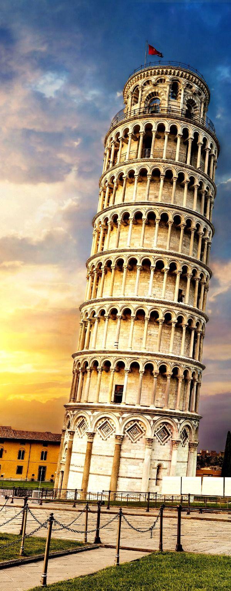

| Eiffel Tower | ||
|---|---|---|
| The Eiffel Tower is the most-visited paid monument in the world; 6.91 million people ascended it in 2015. The tower is 324 metres (1,063 ft) tall, about the same height as an 81-storey building, and the tallest structure in Paris. Its base is square, measuring 125 metres (410 ft) on each side. During its construction, the Eiffel Tower surpassed the Washington Monument to become the tallest man-made structure in the world, a title it held for 41 years until the Chrysler Building in New York City was finished in 1930. It was the first structure in the world to surpass both the 200 meter and 300 meter mark in height. | Click here to visit | |
|  | Leaning Tower of Pisa, Italian Torre Pendente di Pisa, medieval structure in Pisa, Italy, that is famous for the settling of its foundations, which caused it to lean 5.5 degrees (about 15 feet [4.5 metres]) from the perpendicular in the late 20th century. Extensive work was subsequently done to straighten the tower, and its lean was ultimately reduced to less than 4.0 degrees. |
Want to visit this tower
Then Click here